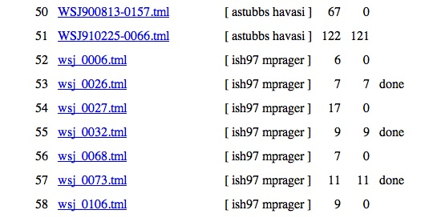
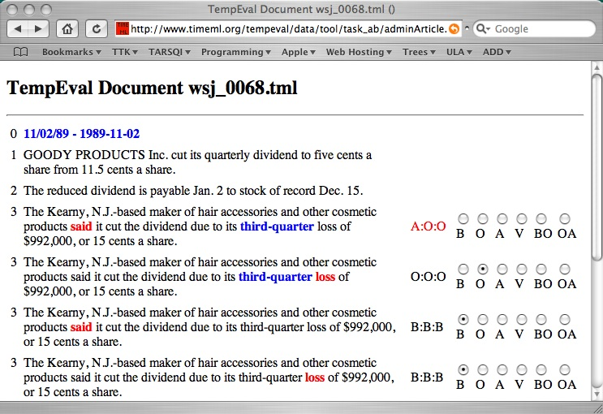

The web-based adjudication tool is at
http://www.timeml.org/tempeval/data/tool/task_ab/adminArticles.php
This will give a list of all documents that have gone through dual annotation.The list has five columns, as shown below on a fragment of the list (snapshot from February 21, 2007).

The second column contains the name of the two annotators, the third column the number of links (and relation types) in the document, the fourth column the number of links that were approved by the adjudicator, and the fifth column indicates whether adjudication was done (adjudication is done if the number of relation types is equal to the number of approved relation types. Documents are not assigned to a particular adjudicator.
Clicking on a document name brings up the document widow:

Each event that needs to be linked is displayed on a separate line with its sentence context. As with the dual annotation phase, a sentence is repeated if there is more that one event in it. In fact, each event-timex pair from task A is displayed with its sentence and each event-DCT pair from task B is displayed with its sentence. Sentences with pairs from task A have a bold-faced event and a bold-faced time expression, sentences with pairs from task B only have a bold-faced event, the Document Creation Time is listed in sentence zero.
The right-hand-side lists the results of the dual annotation. For sentence 3, the string A:O:O indicates that annotator one selected A as the relation type and annotator two selected O. The third letter indicates the value that was in TimeBank, often this is the same as the choice of annotator two. The seven possible values are:
If two annotators disagree, then the string is displayed in red, as with sentence 3 above. For all these cases, the adjudicator should check one of the 6 radio buttons on the right. The adjudicator is not expected to check all the cases where the two annotators agreed, but is allowed to overrule the two annotators, even if they agree.
At the bottom of the display (not visible in the screenshot above) are two buttons: "Submit Judgements" and "Document List". The first one submits adjudication judgements. When the adjudicator clicks this button, all relation type judgements on the right are added to the tally of approved links on the document list. The first time the adjudicator does this, all links the two annotators agreed on will be approved, so the tally can go up even if the adjudicator did not select a single relation type. The "Document List" button links back to the list with all documents.